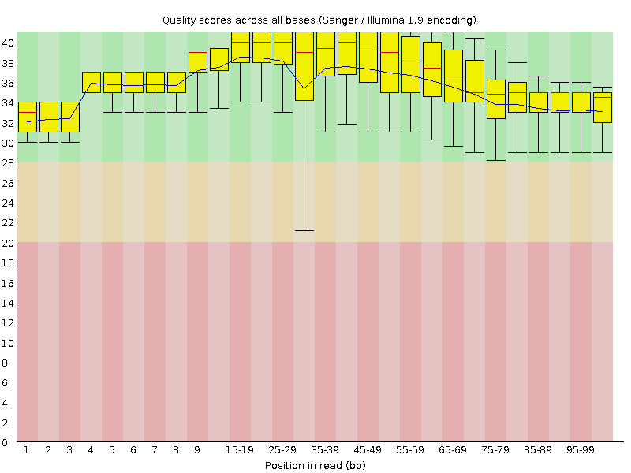
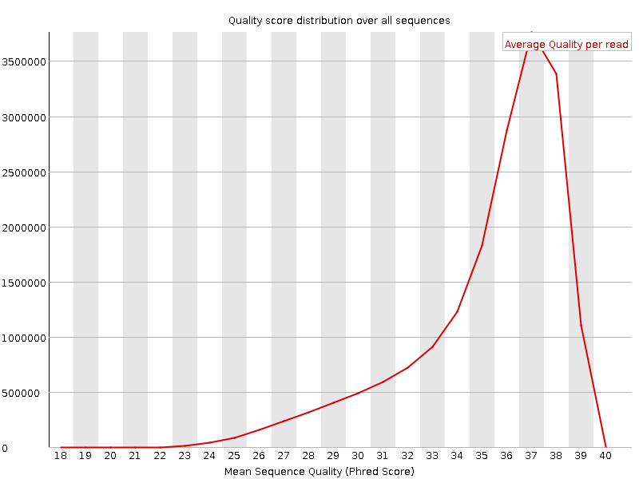
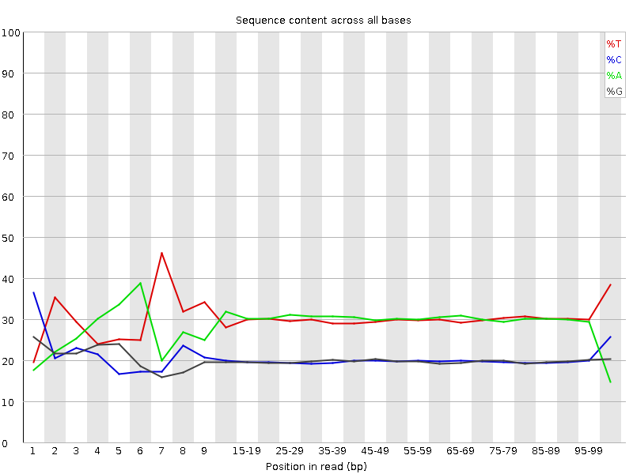
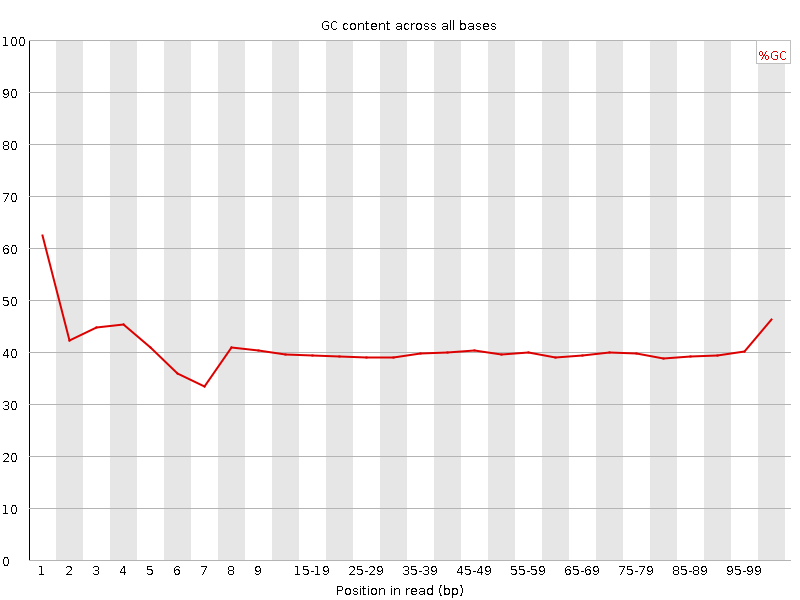
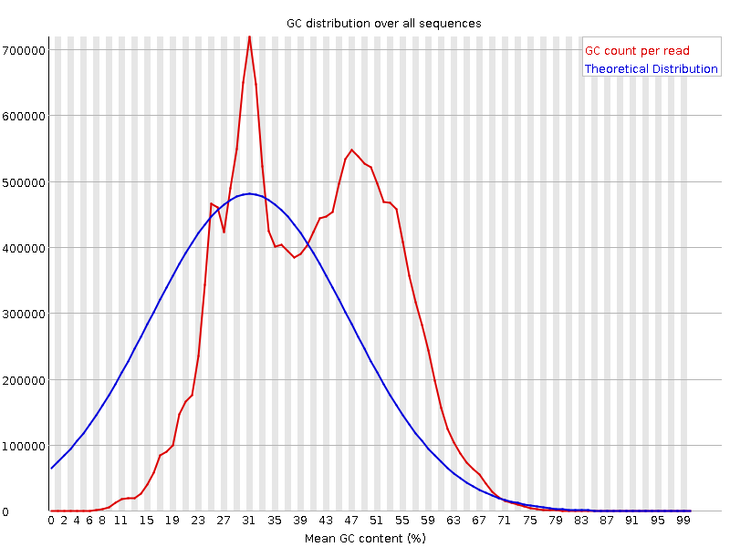
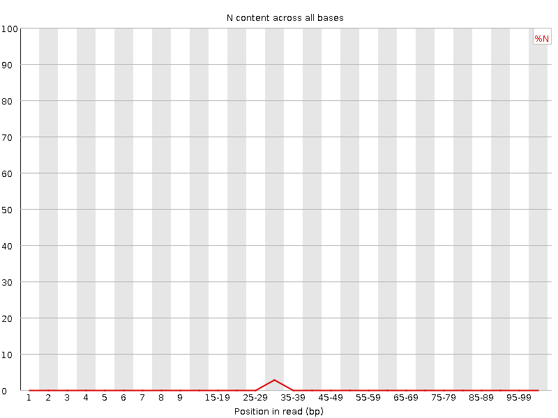
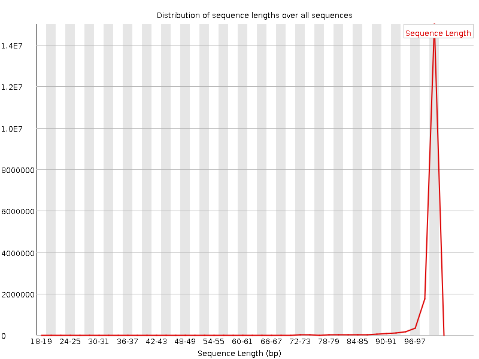
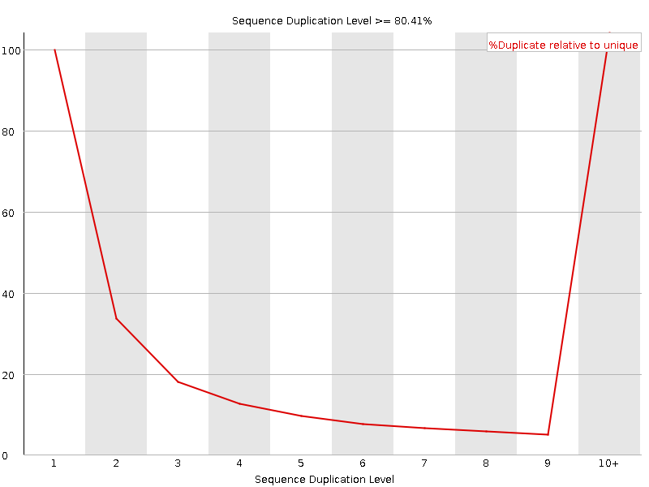
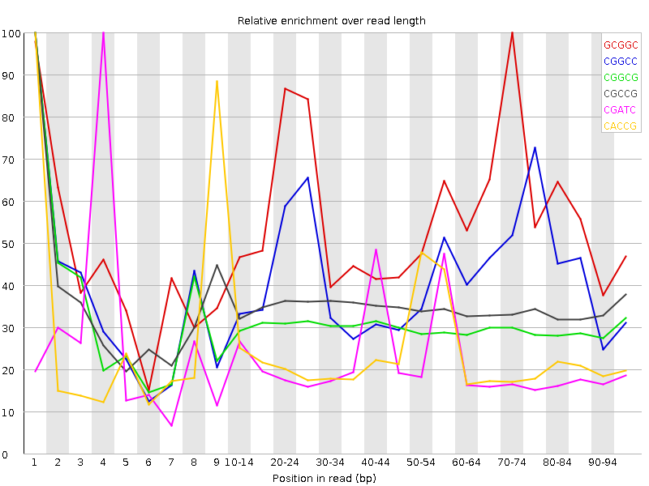

![[OK]](Icons/tick.png) Basic Statistics
Basic Statistics
| Measure | Value |
|---|---|
| Filename | A22-10-R1_val_1.fq |
| File type | Conventional base calls |
| Encoding | Sanger / Illumina 1.9 |
| Total Sequences | 18232041 |
| Filtered Sequences | 0 |
| Sequence length | 20-101 |
| %GC | 40 |
Per base sequence quality

Per sequence quality scores

![[FAIL]](Icons/error.png) Per base sequence content
Per base sequence content

Per base GC content

Per sequence GC content

Per base N content

![[WARN]](Icons/warning.png) Sequence Length Distribution
Sequence Length Distribution

Sequence Duplication Levels

Overrepresented sequences
| Sequence | Count | Percentage | Possible Source |
|---|---|---|---|
| CTTTCGTACAAATAATTTAATACTAATTATAGATAGAAACCGATCTGGCT | 68064 | 0.3733207927735573 | No Hit |
| GTCCTTTCGTACAAATAATTTAATACTAATTATAGATAGAAACCGATCTG | 58270 | 0.31960217728777596 | No Hit |
| CTCATATTTTCTTTCATCCAAGTTTTTAATTAAAAAACAATTGATTATGC | 50023 | 0.27436862389679795 | No Hit |
| CACCGATCTAAACTCAAATCATGTAAAATTTTAAAGGTCGAACAGACCTA | 45067 | 0.24718571003652304 | No Hit |
| CTGGCTTACACCGATCTAAACTCAAATCATGTAAAATTTTAAAGGTCGAA | 32541 | 0.17848248586101798 | No Hit |
| ATTAATTTAAGGAATTAGGCAAATATTGAGCTCAACTGTTTATTAAAAAC | 31975 | 0.1753780610739083 | No Hit |
| GCGTAATATTTTTAGAAAGATCATATTAATAAAAATGATTGCGACCTCGA | 31811 | 0.1744785457645691 | No Hit |
| CAGCGTAATATTTTTAGAAAGATCATATTAATAAAAATGATTGCGACCTC | 23955 | 0.13138956850744246 | No Hit |
| ATTTTTAGAAAGATCATATTAATAAAAATGATTGCGACCTCGATGTTGAA | 21252 | 0.11656402045168723 | No Hit |
| TATTAATAAAAATGATTGCGACCTCGATGTTGAATTAAAATAAAAATTAG | 20664 | 0.11333892897673935 | No Hit |
| CTTTGCACAGTCATTATACTGCGGCCATTTAAAAATCTCATGGGGCAGAA | 20650 | 0.11326214108447868 | No Hit |
| CAAATATTGAGCTCAACTGTTTATTAAAAACATAGCTTTTAGATTATAAT | 19705 | 0.1080789583568839 | No Hit |
| ATTTTCTTTCATCCAAGTTTTTAATTAAAAAACAATTGATTATGCTACCT | 19323 | 0.10598374586805724 | No Hit |
Kmer Content

| Sequence | Count | Obs/Exp Overall | Obs/Exp Max | Max Obs/Exp Position |
|---|---|---|---|---|
| GCGGC | 1578615 | 2.8564112 | 5.1073523 | 70-74 |
| CGGCC | 1552950 | 2.7919703 | 6.676372 | 1 |
| CGGCG | 1396075 | 2.526116 | 8.311557 | 1 |
| CGCCG | 1366880 | 2.4574444 | 7.0860643 | 1 |
| CGATC | 2675365 | 2.1503234 | 9.721948 | 4 |
| CACCG | 1784890 | 2.1431687 | 9.001167 | 1 |
| CCTCG | 1733925 | 2.073329 | 5.7486973 | 1 |
| CGACG | 1706255 | 2.0619593 | 5.9313293 | 1 |
| CCGGC | 1082340 | 1.9458843 | 6.889276 | 1 |
| CTGGC | 1586200 | 1.9089172 | 8.060323 | 1 |
| CGCGG | 1041810 | 1.8850942 | 5.512297 | 1 |
| CCGCG | 1034670 | 1.8601809 | 5.66953 | 1 |
| CCGAT | 2125290 | 1.7082007 | 7.9563165 | 3 |
| CAGCG | 1325900 | 1.6023114 | 5.405646 | 1 |
| GGCTT | 1988180 | 1.601624 | 5.3726525 | 3 |
| GACCT | 1981935 | 1.5929793 | 5.728866 | 95-97 |
| ACCGA | 1944010 | 1.5690118 | 6.035169 | 2 |
| CTTTC | 2737580 | 1.4573543 | 6.9916244 | 1 |
| GGGGC | 793455 | 1.4449674 | 6.9764457 | 95-97 |
| TCCTT | 2596935 | 1.3824818 | 5.383832 | 2 |
| GATCT | 2562735 | 1.3787965 | 6.354159 | 5 |
| CCTTT | 2465950 | 1.3127518 | 5.5054393 | 3 |
| CTCGG | 1046345 | 1.259227 | 5.382633 | 1 |
| TTTCG | 2141220 | 1.1472309 | 5.7148085 | 2 |
| TTCGT | 2035850 | 1.0907753 | 5.633045 | 6 |
| CGTAC | 1295710 | 1.0414263 | 7.630372 | 5 |
| GTCCT | 1174875 | 0.9403843 | 7.159185 | 1 |
| GTACA | 1675485 | 0.90519893 | 5.7997136 | 6 |
| TCGTA | 1660940 | 0.89361495 | 5.4705315 | 7 |